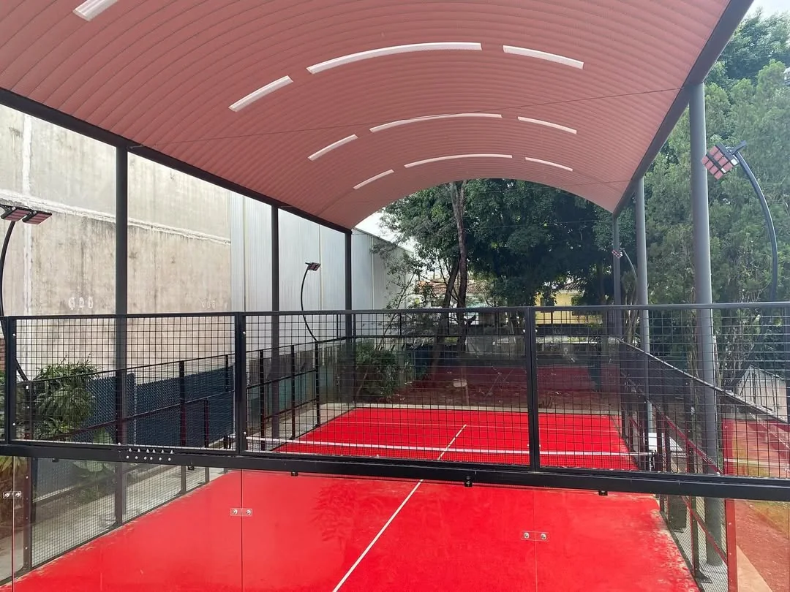

Why This Question Keeps Appearing
Recent padel community discussions show two concerns colliding. Players prefer reliable bookings and consistent ball behaviour, while operators are testing whether warehouse rent, HVAC and other indoor overheads can be supported by local utilisation. The conversation is useful because it exposes the real commercial question: not which format sounds premium, but which format produces dependable playable hours at a sustainable total cost.
Compare the complete venue model: land or rent, civil work, roof or building, drainage, energy, staffing, approvals, maintenance and weather-related cancellations.
Indoor, Outdoor and Covered Compared
| Decision factor | Indoor | Outdoor | Covered outdoor |
|---|---|---|---|
| Weather reliability | Highest when the building controls rain and wind | Most exposed to rain, wind, sun and temperature | Good rain protection; side exposure still matters |
| Capital scope | Building conversion or new hall plus courts | Court, foundation, drainage and lighting | Court plus engineered canopy, drainage and foundations |
| Operating cost | Rent, lighting, ventilation and possible heating or cooling | Lower building overhead, but downtime can reduce revenue | Between the two; ventilation is often natural |
| Playing consistency | Most controlled | Changes with weather and sun | More consistent than open outdoor, but not fully controlled |
| Planning interface | Change of use, fire, access, height, services and noise | Noise, light spill, drainage, landscape and neighbours | Outdoor issues plus canopy structure and roof water |
When Indoor Padel Makes Sense
Indoor padel is strongest where rain, cold, heat or wind would otherwise remove a meaningful share of bookable hours. It can also support a premium player experience because lighting and court conditions remain more repeatable.
The building must still work technically. Verify clear height across the full court layout, not only at the roof ridge. Map beams, lights, HVAC ducts, sprinklers and cable trays before signing a lease. Read our indoor padel clear-height guide for the detailed check.
Indoor risks to model
- Lease cost and break-even utilisation
- Ventilation and heat build-up
- Acoustic reflections inside the hall
- Low fixtures or badly positioned lights
- Fire routes, accessibility and change-of-use approval
- Space lost to columns, circulation and social areas
When Open Outdoor Padel Works
An uncovered court can make sense in dry or mild climates, seasonal resorts, lower-cost community settings and sites where a building is not commercially justified. The foundation and drainage still decide how quickly the court returns to play after rain.
Do not translate a sunny annual climate statistic directly into bookable hours. Wind at the site, low winter sun, wet glass, surface drying time and evening temperature all affect actual player demand. For exposed locations, review the high-wind and coastal planning guide.
Is a Covered Outdoor Court the Best Middle Ground?
A canopy can remove direct rainfall while keeping the sides open for natural ventilation. This can be a strong answer for wet climates where a fully enclosed hall is not viable. It is not simply an outdoor court with fabric above it.
- Confirm free height for lobs and lighting.
- Design for local wind and uplift loads.
- Control roof runoff so it does not flood the playing base.
- Study low sun, roof shadows and contrast at open sides.
- Allow space outside the court for columns and foundations.
- Check whether the covered structure is treated as a building locally.
Compare fixed and retractable configurations in our padel court roof guide.
Use Playable Hours, Not Court Count, in the Business Case
A four-court layout is not automatically more productive than a three-court layout with better reliability, circulation and social space. Estimate the playable hours by month, then apply realistic peak and off-peak demand. Run a downside case for rain cancellations, energy cost, slower ramp-up and lower winter demand.
The result should inform the court format, pricing and roof decision before procurement begins. It also prevents a common mistake: choosing the cheapest physical court configuration while leaving the operator with the most expensive downtime.
Project Decision Checklist
- Map monthly rain, wind, heat, humidity and daylight at the exact site.
- Estimate playable hours for each format.
- Compare complete capital and operating costs.
- Confirm planning, noise, light and drainage requirements.
- Measure indoor clear height or canopy geometry.
- Model realistic utilisation and pricing.
- Reserve circulation, access, storage and social space.
- Coordinate the court, foundation, roof and lighting as one system.
Technical references: International Padel Federation documents and LTA / SAPCA padel court guidance. Local requirements and site engineering take priority.
Choosing between indoor, outdoor and covered?
Send the country, site dimensions, court count, climate, target opening date and any building or canopy drawings. SPORTENVO can help define the court, foundation and weather-protection interfaces.
Request Project Review →Indoor vs Outdoor Padel FAQ
Are indoor padel courts better than outdoor courts?
Indoor courts provide more consistent weather, light and playing conditions, while outdoor courts normally require less building infrastructure. The better option depends on climate, rent, planning, target utilisation and player expectations.
Is a covered outdoor padel court a good compromise?
A covered outdoor court can protect play from rain while retaining natural ventilation. It still requires checks for wind-driven rain, sun and shadow contrast, roof drainage, clear height, foundations and local approvals.
Do outdoor padel courts work in rainy climates?
They can operate, but booking reliability depends on drainage, drying time and the frequency of rain. A wet surface and wet glass change play and may create a safety concern, so model weather-related downtime before selecting an uncovered format.
What should be compared before choosing a format?
Compare annual playable hours, rent or building cost, planning risk, roof and foundation scope, drainage, ventilation, lighting, energy, noise, maintenance and the price players will accept.